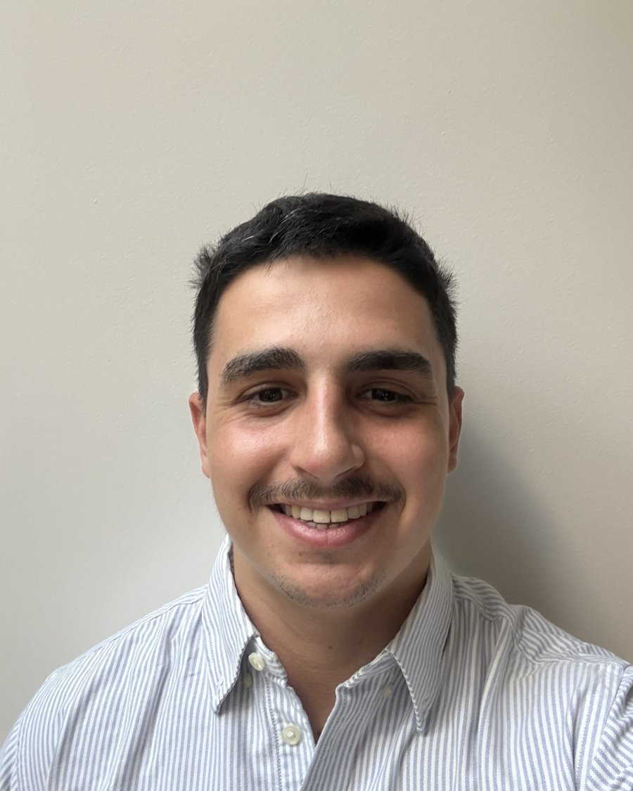

Marco Assisa
Psicoterapia individual con enfoque integrativo
Licenciado en Psicología (UCA). Acompaño procesos terapéuticos de adolescentes y adultos, atendiendo de forma presencial en San Fernando y también online.

Considero que el vínculo terapéutico constituye el punto de partida fundamental de todo proceso de psicoterapia.
Por eso, doy especial importancia a construir un espacio basado en la confianza, la escucha y el respeto por la singularidad de cada persona. Desde este vínculo, busco acompañar al paciente en la comprensión de aquello que le sucede, favoreciendo una mayor conciencia sobre sus emociones, pensamientos y formas de relacionarse, para poder construir juntos nuevas maneras de afrontar aquello que genera malestar.
Escribime para coordinar una primera consulta
Contame brevemente qué te trae a terapia y coordinamos un primer encuentro, presencial en San Fernando u online.
Un abordaje integrativo, centrado en la persona
Mi enfoque es de carácter integrativo, partiendo de la idea de que no existe una única forma de comprender ni de abordar el malestar psicológico. Considero fundamental adaptar el proceso terapéutico a la singularidad, las necesidades y el momento vital de cada paciente, en lugar de intentar que la persona se ajuste a un único modelo teórico.
A lo largo de mi formación realicé capacitaciones en distintos enfoques y modelos psicoterapéuticos —entre ellos la Gestalt— incorporando herramientas que enriquecen la práctica clínica y me permiten seleccionar los recursos que cada proceso requiere.
Mirada flexible
El proceso se adapta a la persona, no la persona al modelo teórico.
Formación
Cognitivo conductual · Psicoanálisis contemporáneo · Herramientas de la Gestalt.
Centrado en la persona
El vínculo, la escucha y el momento vital del paciente guían cada decisión clínica.
Formación
Licenciatura en Psicología
Universidad Católica Argentina (UCA)
Diplomatura de iniciación en la clínica
Espacio Dasein
Curso de formación en duelo
Fundación Aiken
Curso de Formación en PsicoterapiaCursando
SENS
Posgrado en Neurociencias y Psicoterapias ContemporáneasCursando
CISMA
Práctica
Terapeuta individual · Espacio Dasein
Atención clínica en centro psicoterapéutico con un enfoque existencial, trabajando procesos individuales con adolescentes y adultos.
Terapeuta voluntario · Manos de la Cava
Clínica de niños en contexto comunitario, sosteniendo espacios de escucha y acompañamiento.
Disponibilidad
Estos son los horarios semanales que tengo libres, actualizados según mi agenda. Elegí la modalidad, tocá el horario que te quede cómodo y se abre WhatsApp con el mensaje listo para reservarlo.
Atención en San Fernando, Zona Norte.
Cargando horarios disponibles…
Horarios en hora de Argentina. El turno queda confirmado recién cuando lo coordinamos por WhatsApp.